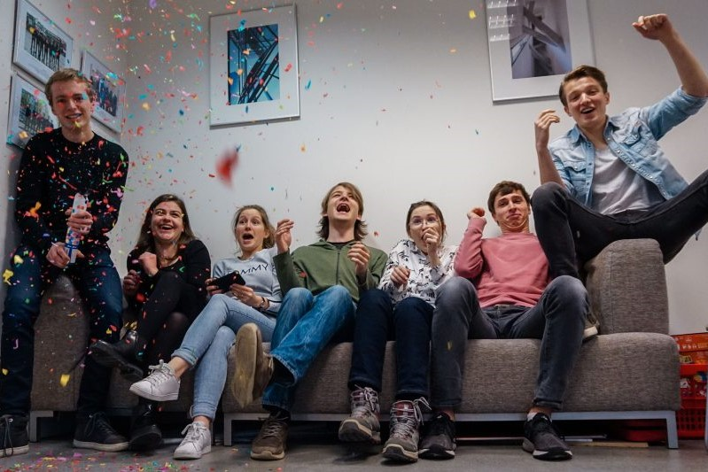
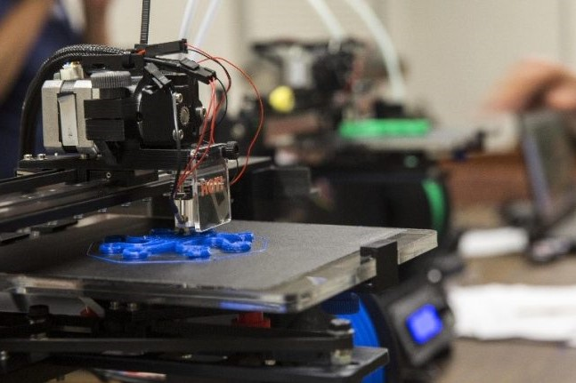
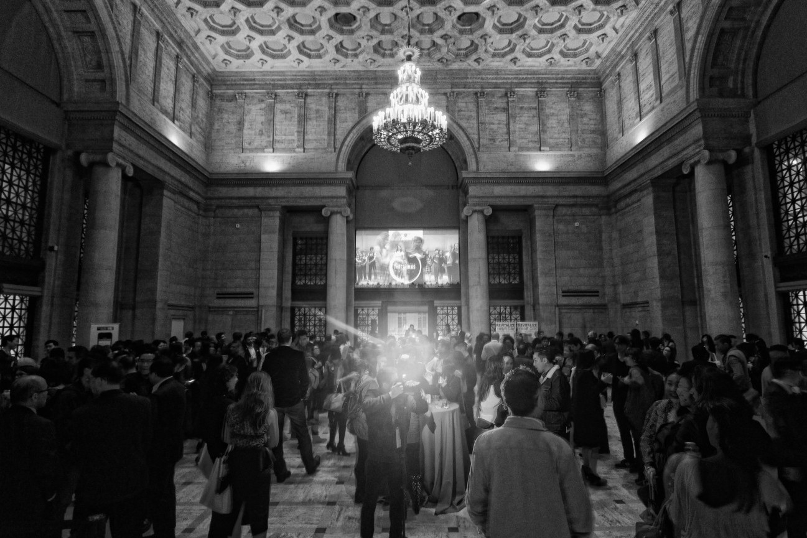
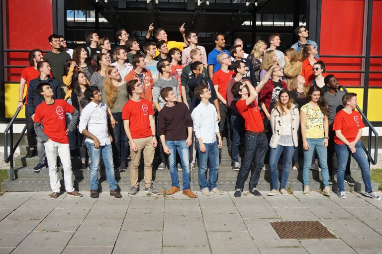
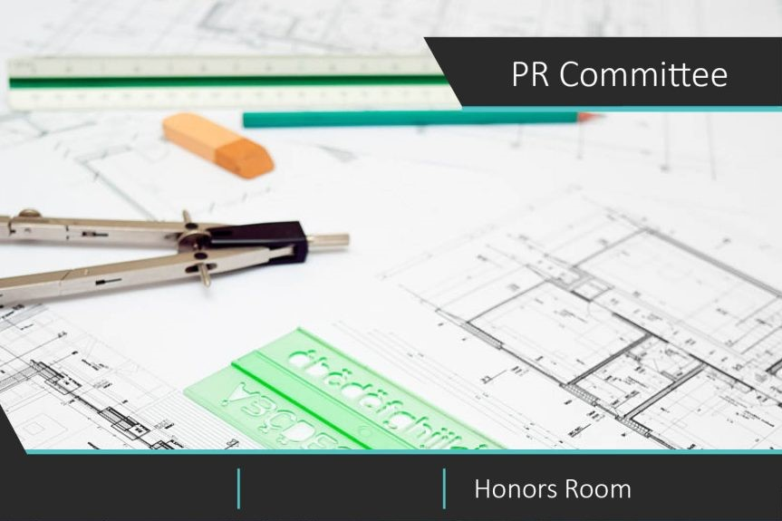
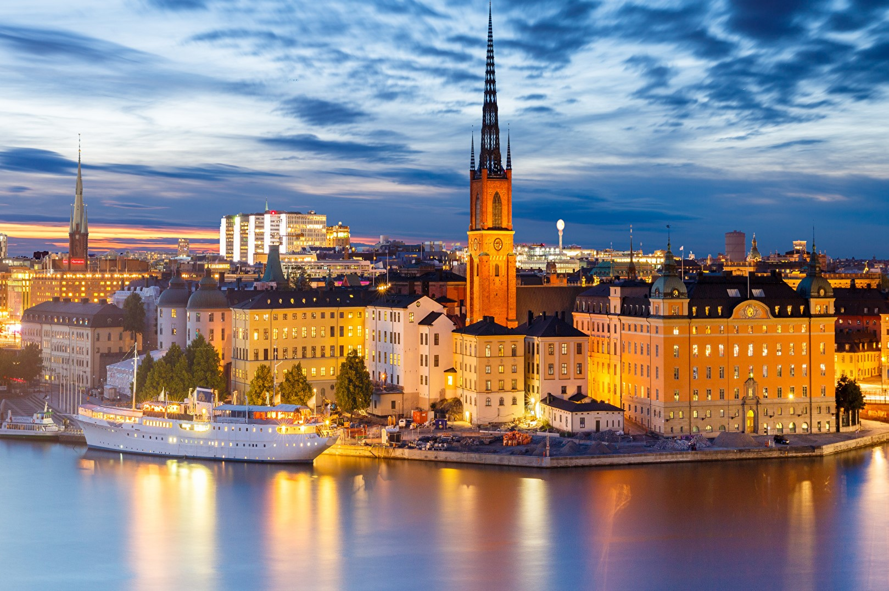
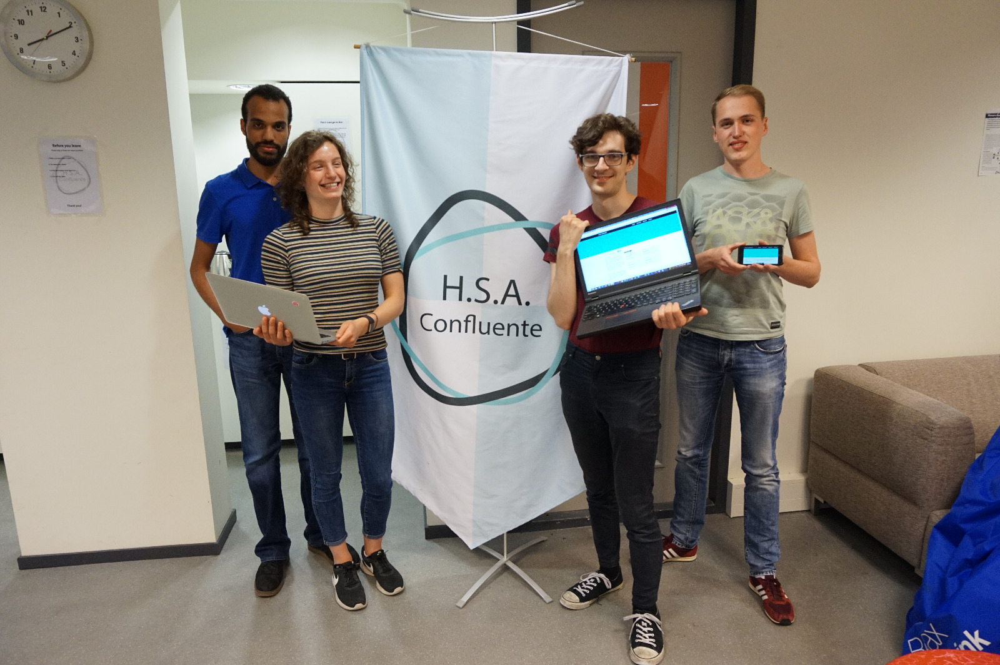

The purpose of the Acquisition Committee is to acquire contacts and sponsorships from companies, in combination with strengthening the existing ties between companies and Confluente.
Acquisition Committee

Activity Committee
The Activity Committee is responsible for the recreational and team building activities, which add to the community of Confluente.

Educational Committee
The Educational Committee is responsible for the educational activities Confluente offers. For example lunch lectures, company visits and workshops.

Gala Committee
The Gala Committee organizes a grand gala. Both our own students as well as Honors students from all other Honors Study Associations are warmly invited to attend this wonderful event.

Intro Committee
The IntroWeekend Committee is responsible for organizing the introduction of Confluente at the beginning of the year for all new first year (honors) students.

PR Committee
The purpose of the PR Committee is to provide the outreach of Confluente. This includes the design of the clothing, a brand new magazine and providing pictures.

Studytrip Committee
The Study Trip Committee arranges a trip to a destination outside of the Netherlands. This trip entails multiple company and university visits, workshops and sight-seeing.

Web Committee
The Web Committee is responsible for the website you are currently looking at. They also handle all the other computer or data related items of the association.